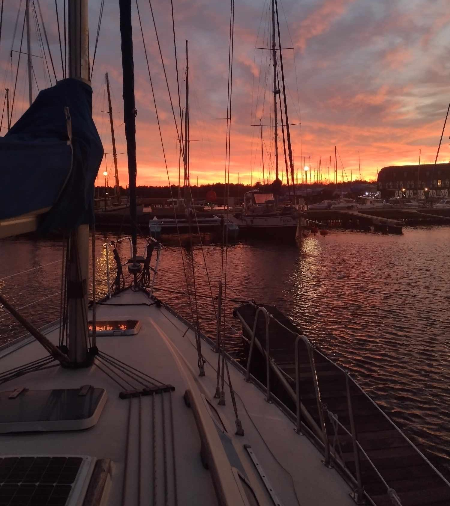
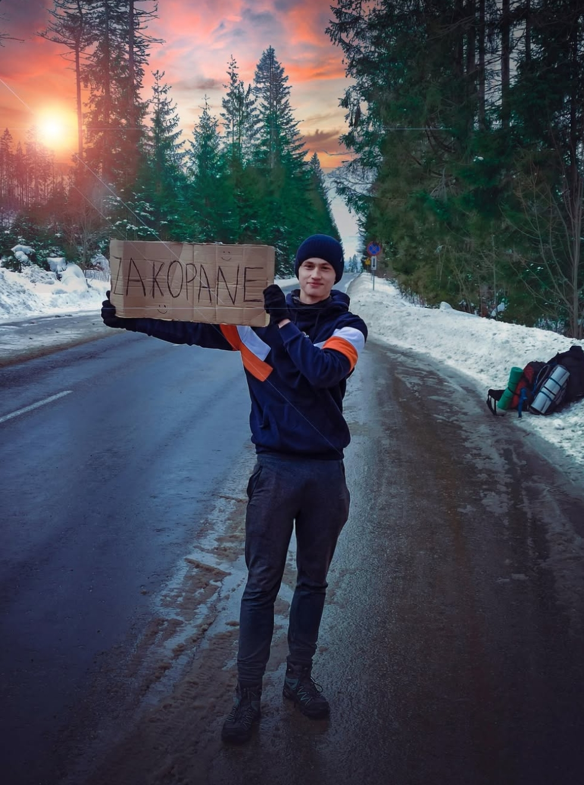

Firefighting
I’m completing firefighter training and take part in unit drills and competitions.
I’m finishing my Computer Science degree. I like understanding how things work, from software to aircraft and yachts.
I grew up with two mathematician parents and four siblings. Physics, mathematics and engineering have interested me since childhood.
Outside work, I sail, learn to fly gliders and play guitar in a band. In my free time, I head back to the Tatras or set off on a hitchhiking trip.
I’m considering a doctorate and would like to combine engineering with research.


I’m completing firefighter training and take part in unit drills and competitions.
I ride recreationally.
I’m training to fly gliders.
I’ve sailed since I was 13 and hold an offshore yacht skipper qualification. Preferably heading north.
I play guitar in a band and am learning piano and singing.
Previously in tournaments, now for enjoyment.
I return to the Tatras several times a year, hike other Polish ranges and climb abroad.
More than 10,000 km across Europe and beyond.